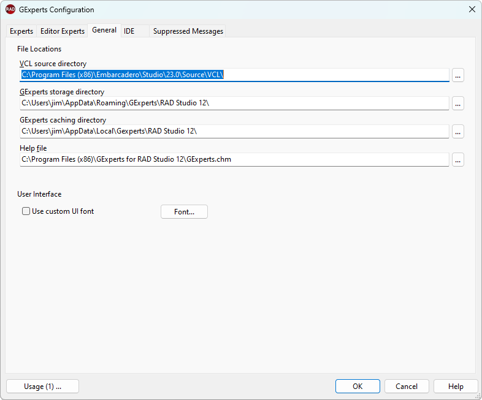

General Configuration |
|
The General tab allows setting locations for the VCL source, the default GExperts data storage directory (where GExperts stores your .xml and other data files), and the GExperts help file. You can also choose to use a custom UI font for all GExperts forms. Note you should only choose 7-9 point variable width fonts, or you may find that the GExperts forms do not scale very well to fit larger text. If you don't specify a custom UI font, the OS default font is used (generally that is Tahoma 8-point for Windows XP and earlier releases, and Segoe UI 9 point for Vista and later). 
|